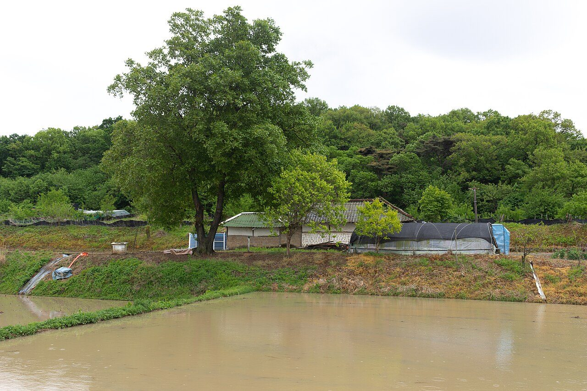
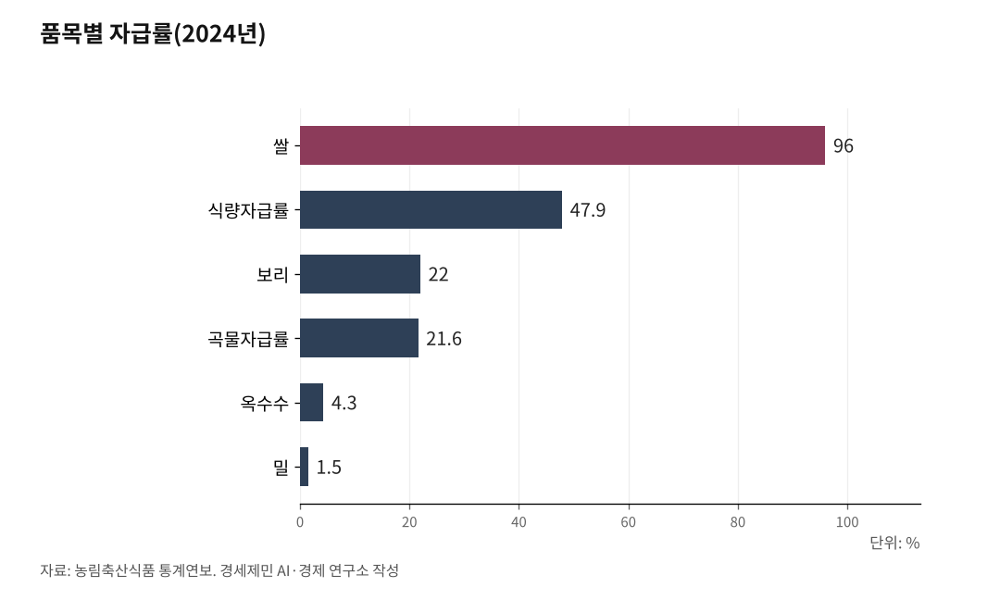

[한국경제 불편한 진실⑭] 식량 — 값싼 수입 밥상은 공짜가 아니라 '보험 미가입'이다
국내에서 쓰는 곡물의 5분의 4가 수입이다. 곡물자급률은 21.6%까지 내려앉았다 (2024년 기준)
농사짓는 사람의 55.8%가 65세를 넘겼고, 논은 해마다 줄어든다 (2024년 기준)
값이 쌀 때는 이익처럼 보이지만, 위기엔 돈이 있어도 못 사는 청구서로 돌아온다
AI경제저널=김갑봉 기자 | 한국인의 밥상은 풍성하다. 그런데 국내에서 쓰는 곡물의 5분의 4는 수입이다.

싸게 사 오는 것이 왜 문제인가. 값이 쌀 때는 문제가 아니다. 값을 매길 수 없는 날이 문제다. 그날 우리 논이 얼마나 남아 있느냐가 진짜 청구서다.
절반이 안 되는 자급
식량자급률은 우리가 먹을 식량을 국내 생산으로 얼마나 대는지를 나타낸다. 2025년 농림축산식품 통계연보에서 2024년 식량자급률은 47.9%다. 한 해 전 49.3%보다 1.4%포인트 내렸다. 절반에 못 미친다.
가축 사료까지 더한 곡물자급률은 21.6%다. 국내에서 쓰는 곡물 100킬로그램 중 78킬로그램을 사 온다는 뜻이다.
품목을 뜯어보면 더 아슬아슬하다. 쌀 자급률은 96.0%로 홀로 높지만, 밀은 1.5%, 옥수수는 4.3%, 보리는 22.0%에 그친다. 쌀 하나가 자급률 전체를 떠받친다. 그 쌀조차 한 해 전 99.1%에서 96.0%로 내렸다.

싼 밥값은 정책이 만들었다
값싼 곡물은 자연이 아니라 정책이 만들었다.
산업화 시절 정부는 도시 노동자의 저임금을 떠받치려 곡물값을 눌렀다. 밥값이 싸야 임금을 낮게 묶을 수 있었다. 저곡가의 부담은 농민이 졌다.
이어 시장이 열렸다. 1995년 세계무역기구(WTO)가 출범했고, 2015년 한국은 쌀 시장을 관세화로 열었다. 쌀에 매긴 관세율은 513%지만, 해마다 40만8700톤을 5% 낮은 관세로 사실상 의무로 들여온다. 한 해 쌀 소비량의 11%에 이른다.
값은 눌리고, 문은 열렸다. 그사이 농민이 떠났다.
값은 눌리고, 비용은 뛰고
논이 줄어드는 데는 이유가 있다. 농사가 남지 않는다.
쌀값은 오르지 않았다. 통계청이 집계한 산지 쌀값(80킬로그램)은 2025년 9월 22만5332원으로, 2021년 이후 4년 만에 22만원을 넘겼다. 뒤집으면 그 몇 해 동안 20만원 안팎에 눌려 있었다는 말이다. 명목 쌀값이 20여 년 전과 크게 다르지 않은데, 소비자물가는 그사이 훨씬 크게 올랐다. 물가를 감안한 실질 쌀값은 오히려 내렸다.
파는 값이 멈춘 자리에서 짓는 값은 뛰었다. 한국농촌경제연구원 자료에서 대표적 질소질 비료인 요소 값(20킬로그램)은 2019년 8600원에서 2022년 2만8900원으로 세 배 넘게 뛰었다. 그해 비료값은 2000년대 들어 가장 높은 수준을 찍었다.
그 결과 2024년 농가 평균소득은 5059만7000원으로 한 해 전보다 0.5% 줄었다. 정작 농사로 벌어들인 순소득인 농업소득은 960만원에 그쳐, 한 해 만에 14.1% 줄었다. 농가 소득의 36.0%는 직불금 같은 정부 이전소득이다. 농사만으로는 살림이 서지 않아, 셋 중 하나 넘는 돈을 나라가 메운다.
늙어가는 논
값이 이러니 젊은 사람이 들어올 리 없다. 통계청 농림어업조사에서 2024년 12월 농가 인구는 200만4000명으로 한 해 만에 4.1% 줄었다. 농가에서 65세 이상이 차지하는 비중은 55.8%로, 우리나라 전체 고령인구 비율 20.0%의 2.8배다.
논밭을 책임진 경영주의 평균 나이는 68세다. 70세 이상 경영주 비중은 처음으로 절반(50.8%)을 넘었다. 지금 세대가 손을 놓으면 이어받을 사람이 마땅치 않다.
싼 수입은 보험 미가입
전망은 더 어둡다. 경제협력개발기구(OECD)와 유엔식량농업기구(FAO)가 2026년 7월 낸 농업 전망에서 한국의 곡물자급률은 2035년 16.8%까지 내려간다. 쌀 재배면적은 축구장 13만여개 넓이만큼 줄고, 농림수산물 무역적자는 160억달러(약 22조원)로 이어진다.
값이 쌀 때 수입은 합리적으로 보인다. 문제는 값이 흔들리는 날이다.
노벨경제학상을 받은 아마르티아 센은 굶주림이 식량 총량이 모자라서가 아니라 그것을 확보할 권리가 무너져서 생긴다고 했다. 곳간에 쌀이 있어도 살 힘이 없으면 굶는다는 것이다. 수입에 매달린 밥상은 그 권리가 바깥 사정에 휘둘린다. 기후 이변, 전쟁, 수출국의 빗장 한 번에 값이 뛰고, 돈이 있어도 제때 못 사는 날이 온다.
값의 전이는 이미 계산돼 있다. 농촌경제연구원은 밀과 옥수수 수입단가가 오르면 국내 제분 가격이 16.98%, 사료가 8.51% 오른다고 봤다. 먼 이야기가 아니다. 2026년 5월 소비자물가는 한 해 전보다 3.1% 올라 2년여 만에 3%대로 뛰었고, 쌀값은 13.5%, 달걀은 10.2% 올랐다. 중동의 분쟁으로 국제 유가와 환율이 출렁이자 밥상이 먼저 흔들렸다.
싼 수입 밥상은 평시의 이익이자, 들지 않은 보험이다. 보험료를 아낀 대가는 사고가 나기 전까지 보이지 않는다.
오늘 저렴한 밥값 영수증에는, 위기의 날 치를 값이 적혀 있지 않다.
※ 이 기사는 AI 프로그램 클로드 오퍼스 4.8을 활용해 작성했다.
참고문헌
· "심상찮은 '식량자급률' 하락…'식량안보법'이 해법될까", 농민신문, 2026.01.07. https://www.nongmin.com/article/20260107500583
· "2035년 韓 곡물자급률 16%대 추락…식량안보 취약해져", 뉴시스, 2026.07.02. https://www.fnnews.com/news/202607020630507050
· 통계청, "2024년 농림어업조사 결과", 2025.04.17. https://www.korea.kr/briefing/pressReleaseView.do?newsId=156684758
· 국가데이터처, "2024년 농가 및 어가경제조사 결과", 2025.05.23. https://www.kostat.go.kr/board.es?mid=a10301010000&bid=11860&list_no=436728&act=view
· "쌀값 한 가마 산지 가격 22만5332원…1년 전보다 28.8%↑", 아주경제, 2025.09.17. https://www.ajunews.com/view/20250917182527892
· 서대석·서동주·김부영, "주요 농자재 가격 동향과 시사점(현안분석 제91호)", 한국농촌경제연구원, 2022.09.19. https://repository.krei.re.kr/bitstream/2018.oak/29001/1/PRI091.pdf
· "쌀 관세율 513% 확정…국내 쌀 시장 영향 최소화 노력", 대한민국 정책브리핑, 2015. https://www.korea.kr/briefing/policyBriefingView.do?newsId=148866693
· 한국학중앙연구원, "저농산물가격정책", 한국민족문화대백과사전. https://encykorea.aks.ac.kr/Article/E0075716
· OECD·FAO, "OECD-FAO Agricultural Outlook 2026-2035", 2026.
· Amartya Sen, "Poverty and Famines: An Essay on Entitlement and Deprivation", Oxford University Press, 1981.
사진 출처
· [대표사진] Nt, "Rice Paddy in Ganghwa Island 2.jpg", 위키미디어 공용, CC0, https://commons.wikimedia.org/wiki/File:Rice_Paddy_in_Ganghwa_Island_2.jpg
※ 이 브리핑은 인공지능을 활용해 작성했습니다.
관련기사
- [한국경제 불편한 진실⑫] 플랫폼 — 주문 한 건에 매출 3할이 사라진다
- [한국경제 불편한 진실⑬] 에너지 — 싼 전기요금은 공짜가 아니라 '외상'이다
- [주식공부] 코스피 12.13% 하락, 자사주 끊긴 자리에 선 개인
- 노후계획도시 선도지구, 분담금은 용적률 두 구간에서 갈린다
저작권자 © AI경제저널 무단전재 및 재배포, AI학습 및 활용 금지